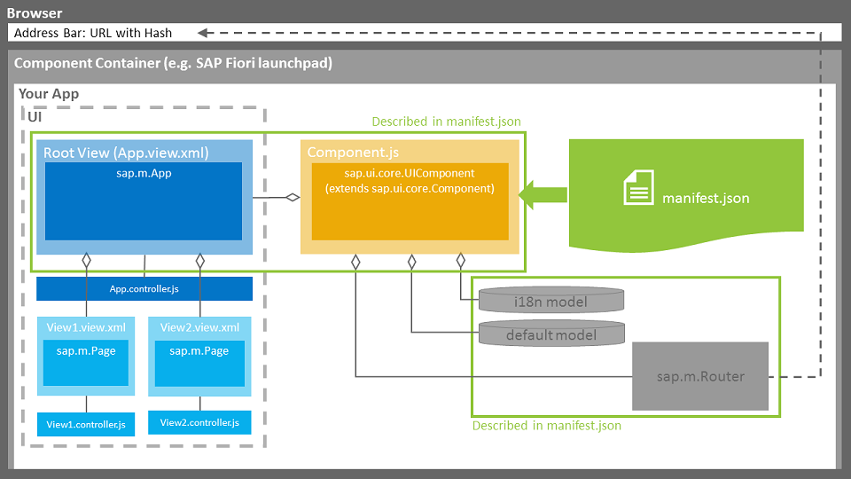

在UI5 SDK中的EXPLORER里面有着各种控件的用法，所以在这里也没有必要再来一遍，还是看官方的用法更地道。
看一下基于最新的库所推荐的项目结构。

另外，我觉得对于初学者来说是一个非常好的消息，就是UI5版本从1.28更新到1.30以及更高之后，Tutorial系列有了重大更新，之前的Get Started->Tutorials->Application Best Practice现在改为Tutorial->Walkthrough，跟随着Walkthrough把所有的步骤走完，基本上UI5就算可以入门了，每一个步骤在EXPLORED中可以看到效果，并且可以下载到完整的代码，所以基于这个原因，我觉得我之前写的入门系列基本上可以不用再看了，跟着这个Walkthrough走就足够了。
链接贴在这里：https://openui5.hana.ondemand.com/#docs/guide/3da5f4be63264db99f2e5b04c5e853db.html
除了Walkthrough之外，1.30及更高版本的更新还增加了不少其他的改动，这里列举一下我觉得比较重要的部分，这些内容在做Walkthrough的过程应该也都会感受到。
项目目录结构
在之前的版本中，官方的最佳实践或者样例代码一般都是把视图文件和控制器文件放到一个目录中，显然，这种组织代码的方式对于管理稍大型的应用就会显得比较混乱，但是官方之前对于如何组织代码并未给出明确的方式，而在1.30版本更新之后，在文档中专门有一篇来介绍目录结构。这里我就大致的介绍一下。
三个主要的目录是root, webapp以及test目录。

- root 目录
顾名思义，是整个项目的根目录，目录名可以是任意的项目名称，在这个目录之下包含的文件应该是你写的APP的代码以外的一些辅助文件，比如工程文件或者是一些说明性的文件，如果这些文件比较多，也可以在这之下再创建一个目录来管理。比如可以把所有的文档文件都放在doc目录中等等。 - webapp 目录
这个目录包含的是应用的所有代码文件，比如视图文件，处理逻辑的js文件，本地化资源文件i18n文件，模型文件（可选），以及测试相关的文件（放到单独的test目录中）。 - test 目录
这个目录应该用来存放测试相关的文件。
具体细节还是看官方的介绍吧：https://openui5.hana.ondemand.com/#docs/guide/003f755d46d34dd1bbce9ffe08c8d46a.html
应用描述符文件
在1.28及之前，单独的一个应用可以被包到Component中，可以通过Component的metadata来描述一些应用的信息，比如依赖的库，资源文件（css、i18n）等等，或者应用公共的一些配置信息，都放到Component.js中。 从1.30开始，UI5引入了应用描述符文件manifest.json，官方是这么说的：
The descriptor for applications, components, and libraries is inspired by the Web Application Manifest concept introduced by the W3C. The descriptor provides a central, machine-readable and easy-to-access location for storing metadata associated with an application, an application component, or a library.
我们可以把应用的一些配置信息都放到这个manifest.json里面，UI5提供了API来检索相应的配置信息，同时，当我们需要把这个app放到Fiori Launchpad的时候，一些相应的配置信息也会被Fiori Launchpad读到。
总结
UI5的Developer Guide的可读性越来越强，所以建议如果想要真正掌握UI5还是要静下心来花点时间把Guide都过一遍，不过惭愧的是我自己都没有完完整整的看过，都是碰到哪里不明白了再去查找，好在1.30之后，增加了搜索的功能，可以快速的定位到自己感兴趣的部分。
至于这个UI5学习入门系列，就像最开始说的，我觉得基于现在官方Guide足够强大已经没有再自己造车轮的必要了。如果要进一步的深入的学习，JavsScript的深入理解是必不可少的，同时要看到SAP现在也是在积极的拥抱开源，在UI5库中用到不少开源的库，所以对于这些库我们也需要做深入的了解，然后在这个基础之上我们再去理解UI5的架构，那时才能做到举重若轻。